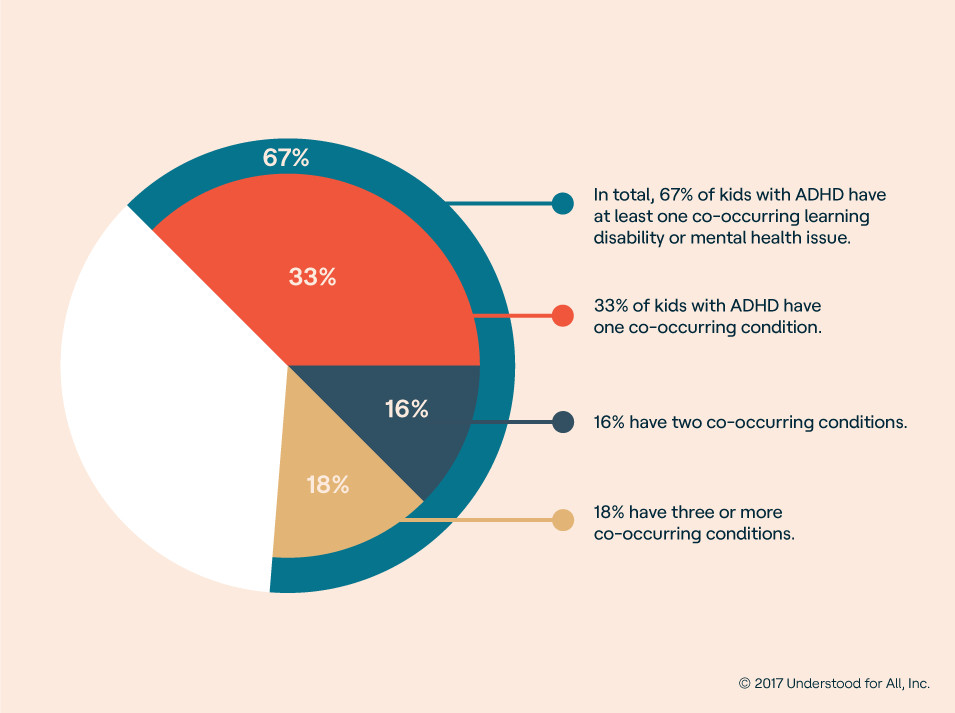
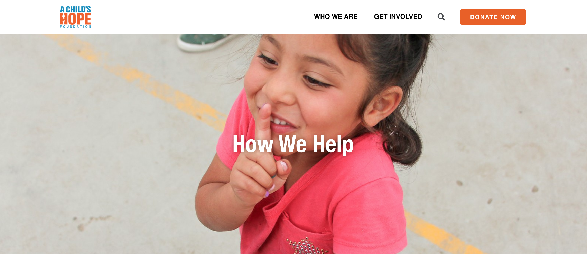
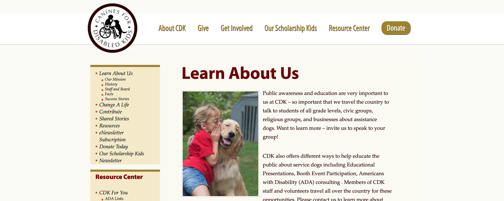

Research
What information can we find?
Primary Research
While Canines for Disabled Kids is a great cuase, their website needs some work. One thing I noticed is that when you scroll on the homepage there is a odd space between the nav and the info that makes it really hard to read. There is a lot of muted brown and burgandy throughout the website which is not very inviting. Since this is an organiztion for kids it might help to add more vibrant colors.Canines for Kids offers their services in 12 states but, shows this with a boring, small list. I think creating an interactive map or section devoted to the different locations they work at.The very long list that is used as a nav bar (on all the pages except the home page) is not very effective. I found it hard to navigate because of the small text and the odd hierarchy. On a positive note the logo is pretty clean and represents the organization well. Overall, Canines for Kids is full of great information but, needs to be organized into a more inviting and easy navigating website.

Secondary Research
Step 1: Explore the most recent news in your client's field: internet, newspapers, magazines, and journals.
According to many articles, there are many different ways trained dogs can help the disabled besides emotional support. These dogs can help disabled people with walking, navigating towards or away sounds, pick up objects, prevent falls, and so much more. The not so largely know contributions of these canines is furtherly discussed in this Abilities article. Not only are they helpful in the most unexpected ways but, they are also helpful in many unexpected places. For instance, the ADA allows the use of service dogs at schools if they are not responsible for watching after the dog.
These kids have a great need for emotional and physical support just to live a normal life like the rest of us. There are many different disabilities that need acounting for that would effect how a service dog is trained. The Very Well Family Very Well Family discusses the amount of different dissabilities there are and how much support these people need.

Step 2: Try to find recent innovations in your client's field: technical, behavioral, or cultural.
One other way these organizations are creating independence for these kids is through scholarships. Canines for Kids offers the kids involved with their establishment scholarships. There is a growing in fundraisers as well that are a big help when trying to train and provide the service dogs.
Step 3: Look at other solutions. Which worked? Which didn't? Any similar solutions?
The first image is from A Child's Hope Foundationwhich uses a simple, readable nav bar at the top. There is also a nice presence of color which makes the site seem more related to children. One of the biggest parts of this website that I think works effectively is the use of images throughout. Though viewers tend to scan over to get the main points of a page they never usually over look pictures. These are the reasons I found great inspiration in this specific website.
This next image is from the Canines for Kids website. As you can see the nav bar is located on the top and on the side. It is also full of text rather being simple like A Child's Hope. It would be helpful to have larger images throughout to catch the viewer's eye. It could also be effective to add more colorful elements to give the theme of an organization for children.
Step 4: What are the most relevant facts and figures of the client's challenge?
Canines for Disabled Kids (CDK) began in 1998 as an offshoot of the NEADS, Dog for Deaf and Disabled Americans training program. Very few service dog programs were willing to provide trained service dogs for children. CDK believed it was possible to train dogs to help autistic children, children with hearing impairments, other physical disabilities and set out to help families find the best training programs for their children.
CDK’s programs provided services to over 3,500 people across 11 states in FY 2017.
It costs $49 per person to provide educational materials, presentations and individual support across the country.
Our Mission: “Increasing independence for children with disabilities and their families by promoting service dog partnerships, understanding and awareness throughout the community.”